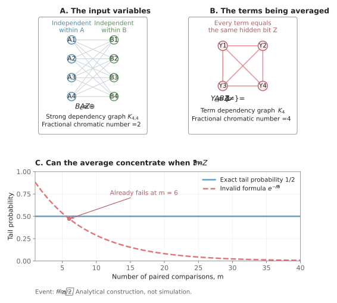
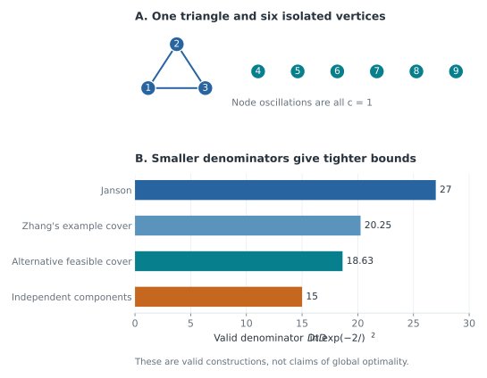
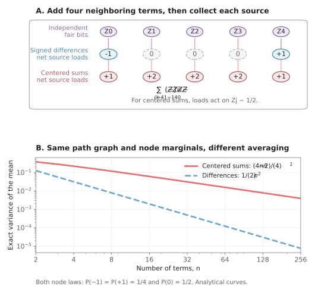

What a dependency graph forgets
More observations usually make an average more stable. Dependence complicates that story. A thousand measurements that repeat the same random outcome still contain only one outcome’s worth of information.
A dependency graph seems like a natural way to keep track of this. Put a variable at each vertex and connect variables whose dependence we need to allow. Perhaps a small graph parameter can tell us how much averaging will help.
I wanted to understand how far that idea goes when building confidence bounds for COMET, a working project on counterfactual moment auditing. A surprisingly small example exposes the difficulty. The graph describes independence among inputs. A confidence bound also needs to know what we do with those inputs.
But the graph only needs two colors
We need a precise meaning of dependency graph. I use the strong version: whenever two disjoint sets of vertices have no edges between them, the two whole random vectors are independent. Checking pairs alone does not establish this condition. A graph of conditional independence, such as a graphical model, answers a different question.
For our bit lists, the complete bipartite graph K_{m,m} is a valid strong dependency graph. Put all A_i on one side and all B_i on the other, with every possible cross-edge. Any two nonempty vertex sets with no edges between them must lie on the same side, where joint independence holds. Two colors suffice.
Also, changing one observed bit while holding the others fixed changes f by at most one. It is tempting to combine these two facts into a concentration bound with denominator
\chi_f(G)\sum_i c_i^2=2\cdot 2m=4m,
where c_i=1 is the maximum effect of changing coordinate i, and \chi_f is the fractional chromatic number. Fractional coloring allows weighted independent sets instead of assigning each vertex one color.
That proposed bound is false for a general function. At t=m/2, it would claim
\underbrace{\Pr(f-\mathbb Ef\ge m/2)}_{1/2} \ \le\ \underbrace{e^{-m/8}}_{\text{invalid proposed bound}}.
The right side falls below 1/2 as soon as m\ge6.

The apparent paradox disappears when we ask which variables are being added. The summands are Y_i=\mathbf 1\{A_i\ne B_i\}=Z. Their dependency graph is a complete graph on m vertices. All the observations have become copies of one random quantity.
The line in the proof that matters
Janson’s concentration result applies to sums of bounded, partly dependent variables. In the notation here, if
f(X)=\sum_i\phi_i(X_i),\qquad \sup\phi_i-\inf\phi_i\le c_i,
then a valid upper-tail bound is
\Pr(f-\mathbb Ef\ge t) \le \exp\!\left(-\frac{2t^2}{\chi_f(G)\sum_i c_i^2}\right).
To see why the sum matters, start with an ordinary coloring. It splits the centered sum into color-class sums. Inside each class, the summands are jointly independent. Hölder’s inequality then combines the classes without requiring independence between them. Fractional coloring uses the same idea with weighted independent sets.
The crucial step is the identity that splits the statistic into those sums. A general function with small coordinate effects need not split that way. Our disagreement count contains interactions between the two lists. Independence within each list does not turn it into a function of A plus a function of B.
For interaction statistics, one practical repair is to build the graph on the actual summands. Connect two terms when they share an input or when their input sets have a connecting edge in the original dependency graph. This gives a sufficient dependency graph for the terms. In the XOR example, it correctly produces the complete graph.
Can forests give a sharper answer?
There is still useful information beyond a color count. Zhang’s When Janson meets McDiarmid gives a bounded-differences result for general functions when the strong dependency graph itself is a forest.
For an induced forest on vertices F, its cost is
Q_G(F,c)= \sum_{\{i,j\}\in E(G[F])}(c_i+c_j)^2 +\sum_{T\in\operatorname{comp}(G[F])}\min_{i\in T}c_i^2.
For a function of X_F with coordinate effects bounded by c_i, the resulting tail bound is \exp(-2t^2/Q_G(F,c)). Isolated vertices count as one-vertex trees. For a general graph, compatible decompositions into induced forests can be combined using Hölder’s inequality. Smaller valid denominators give tighter bounds.
A nine-variable example makes this concrete. Take a triangle and six isolated vertices, with all c_i=1, and consider a node-additive statistic. The global Janson denominator is 3\cdot9=27. Zhang’s Example 2.7 supplies a feasible forest cover giving 81/4=20.25. Another feasible cover gives (\sqrt{11}+1)^2\approx18.63.
Then a simpler observation helps further. The triangle is independent of all six isolated vertices. Bound the triangle’s sum as one variable with range length three, paying 3^2=9. The isolated vertices cost one each. Independence lets these costs add, giving 15.

These are valid constructions, rather than a proof of the best possible constant. They suggest a useful order of work: exploit obvious independent components, then look for a better cover.
A fractional forest cover assigns nonnegative weights \omega_F to vertex sets whose induced subgraphs are forests, with \sum_{F\ni}\omega_F=1 at every vertex. We keep every original edge between selected vertices. Deleting inconvenient dependency edges would change the assumption.
For a particular cover, we also need a function identity
f(x)=\sum_F\omega_F f_F(x_F),
where each f_F has coordinate effects at most c_i. That cover gives the valid denominator
D_{\mathcal C}=\left(\sum_F\omega_F\sqrt{Q_G(F,c)}\right)^2.
The decomposition must hold for the cover being used. To minimize freely over all covers, it must hold for all of them. On the full product domain, testing the cover consisting of single vertices immediately forces node additivity. A decomposition over one convenient family of local interactions does not pass this stronger test automatically.
This restriction concerns optimizing covers on a general graph. The direct forest theorem above still applies to general bounded-differences functions when the whole dependency graph is a forest.
The graph also forgets signs
Even a valid, carefully optimized graph bound can miss information in the mechanism that generates the data.
Take independent fair bits Z_0,\ldots,Z_n and form either of two sequences:
\xi_i^-=Z_i-Z_{i-1},\qquad \xi_i^+=Z_i+Z_{i-1}-1.
Both have the same path dependency graph: only neighboring terms share a source. Every coordinate also has the same distribution, taking -1 and 1 with probability 1/4 each, and 0 with probability 1/2.
But summing the differences cancels every internal source:
\sum_{i=1}^n\xi_i^-=Z_n-Z_0.
Only the endpoints remain. Summing the plus sequence instead gives each internal source coefficient two. A direct variance calculation yields
\operatorname{Var}(\bar\xi^-)=\frac{1}{2n^2},\qquad \operatorname{Var}(\bar\xi^+)=\frac{4n-2}{4n^2}.
One average has standard deviation of order 1/n; the other has order 1/\sqrt n. The graph and the individual marginal distributions are identical.

The source calculation behind this is simple. Suppose centered observations satisfy X_u=\sum_s b_{us}\varepsilon_s for independent centered sources. For a weighted sum,
\sum_u a_uX_u=\sum_s\beta_s\varepsilon_s, \qquad \beta_s=\sum_u a_ub_{us}.
Compute each source’s net coefficient before taking absolute values. Replacing |\sum_u a_ub_{us}| with \sum_u|a_ub_{us}| too early erases cancellation. The same calculation explains the XOR example: changing the hidden source Z changes every comparison together.
Put the improvement where the proof can use it
For COMET, the useful destination for this structure is a bound on the moment of a centered block sum. Write
S_b(\theta)=\sum_{u\in b}X_u(\theta),\qquad \mathbb E\!\left[|S_b(\theta)|^p\mid\mathcal D\right] \le\Gamma_{b,\theta},\qquad 1<p\le2.
Here \theta identifies a candidate audit target, and X_u(\theta) is its centered score for observation u. The information \mathcal D contains the fixed design and any independent pilot information. A smaller, valid, known \Gamma_{b,\theta} can shrink the confidence radius while leaving the median-of-means estimator unchanged. This estimator averages observations within several groups and then takes the median of those group averages.
Different structures can supply \Gamma. A graph coloring gives one bound. Retaining color-class sizes and unequal node moment bounds can improve it without assuming bounded observations. An independent-source model can preserve cancellation. Conditional on \mathcal D, suppose the sources remain independent and centered, with \mathbb E(|\varepsilon_s|^p\mid\mathcal D)\le\rho_s^p. Let \beta_{bs} be source s’s net coefficient in block b, known given \mathcal D. A conservative von Bahr–Esseen type bound gives
\Gamma_b=2\sum_s|\beta_{bs}|^p\rho_s^p.
At p=2, independence allows the factor two to be replaced by one. A bounded forest result can also supply a moment bound, but a finite moment envelope alone cannot stand in for a deterministic coordinate range.
The following is the parameterized median-of-means calculation developed in the working note. Conditional on \mathcal D, assume B jointly independent evaluation blocks, each with n_0 rows. Every block has the same target mean M_{\mathcal D}(\theta). The bounds \Gamma_{b,\theta} are finite, known, and \mathcal D-measurable. Let \Theta be a finite candidate set, 0<\alpha<1, and choose
K=\left\lceil8\log\frac{2|\Theta|}{\alpha}\right\rceil, \qquad B\ge2K.
Partition all blocks, according to the design, into K disjoint groups with sizes L_g\in\{\lfloor B/K\rfloor,\lceil B/K\rceil\}. Let T_g(\theta) be the mean of the L_gn_0 rows in group g. For the median \widehat M(\theta) of these group means, set
r_\theta= \left[ 16\max_g\frac{\sum_{b\in g}\Gamma_{b,\theta}}{(L_gn_0)^p} \right]^{1/p}.
Then, with conditional probability at least 1-\alpha, simultaneously for every \theta\in\Theta,
|\widehat M(\theta)-M_{\mathcal D}(\theta)|\le r_\theta.
The proof uses the independent-block moment bound
\mathbb E\!\left[|T_g-M_{\mathcal D}|^p\mid\mathcal D\right] \le\frac{2\sum_{b\in g}\Gamma_{b,\theta}}{(L_gn_0)^p}.
Markov’s inequality makes each group’s failure probability at most 1/8. Group independence bounds the probability that at least half fail by e^{-9K/32}\le e^{-K/8}. A union bound over candidates completes the argument. A zero radius means the relevant centered block sums vanish almost surely.
For comparison, substituting the original coloring bound \Gamma_{b,\theta}=2n_0\nu_\theta^p\chi^{p-1} recovers
r_\theta=32^{1/p}\nu_\theta \left(\frac{\chi}{L_{\min}n_0}\right)^{(p-1)/p}, \qquad L_{\min}=\lfloor B/K\rfloor.
Thus the change enters through the block moment, with the estimator and independent-block argument preserved.
There is one particularly consequential detail for counterfactual scores. Importance weights depend on random exposures. They can disrupt cancellation: in a weighted difference sum, the internal source coefficients become a_i-a_{i+1}. Conditioning on the exposures fixes those weights, but generally leaves an exposure-dependent residual mean. The complete centered score needs both that residual and the source-noise term. A dependency graph for outcome noise alone does not establish a graph for the whole score.
The interface above therefore keeps the fixed-design, independent-evaluation-block setting. A source shared across blocks can invalidate block independence, so independence must be established for the complete block scores. Adaptive histories and mutually fitted nuisance estimates need their own argument.
What I would compare next
The examples suggest a compact experiment: hold the path graph and node marginals fixed, vary the source signs, and then vary the weights. Compare the resulting confidence radii with exact variances. Include a shared-source example and a fully dependent case alongside the cancellation example. These would be tests of what each certificate recognizes; the figures here are analytic constructions, not experimental results.
The question I started with was whether a finer graph parameter could replace a coloring penalty. The more useful question is what information a proof has actually used. A graph can justify independence. A compatible function decomposition lets us use that independence for the statistic at hand. A source model can reveal cancellations that both the graph and the marginal distributions leave unspecified. Each extra piece of information can change how much averaging helps.
This note adapts the calculations in a longer working note on structured dependence and COMET. The forest results and original cover example are due to Rui-Ray Zhang; the shared-sign counterexample mechanism is due to Daniel Paulin. The alternative cover, component comparison, source calculations, and block-moment interface are derivations presented here, without a claim of literature priority. All figures are redrawn from the stated constructions and formulas.